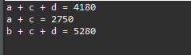

[Java] 6. 関数の使い方(関数のオーバーロードと再帰的な方法について)
こんにちは。明月です。
この投稿は関数の使い方(関数のオーバーロードと再帰的な方法について)に関する説明です。
すべてのプログラムの言語で関数の使い方は文法的な差異がありますが、概念についてはC言語からすべて似ているです。
プログラムの言語で関数は二つの概念があります。
一つは関数は変数と違い、メモリ割り当てがなしで単純な処理概念だけあるので、main関数から始ますプログラム設計をもっと見やすく分ける役割をします。
二つは数学的な関数と同じ概念で「f(x)=x+1」みたいに関数の目的をはっきりして「f(1)=2、f(2)=3」みたいに関数とパラメータの組み合てで一つ以上の二項関係を生成してプログラムの正義を単純にします。
Javaで関数の使い方は下記通りになります。
[アクセス修飾子] [リターンタイプ] メソッド名 (マラメータ) {
........
return リターンタイプ;
}
アクセス修飾子は関数のアクセス設定ですが、これは関数の機能によりクラスのカプセルと関係があるので別の投稿で説明します。
関数を定義するのはメソッド名が一番重要ですが、Javaはオーバーロード機能があり、メソッドの名+パラメータの組み合てで結んで関数を定義します。
オーバーロードは投稿の下の部分の詳しく説明します。まず、関数のリターンタイプ(データタイプ)、メソッドの名、パラメータの構造で作成されます。リターンタイプが無い場合じゃなければ、すべて関数でreturnを生成してタイプを一致しなければならないように作成します。
public class Example {
// 実行関数
public static void main(String... args) {
// パラメータに使う変数
int a = 50;
int b = 10;
// 足す算の関数に変数を入力
// add(50, 10) = 60
int c = add(a, b);
// コンソール出力
System.out.println("50 + 10 = " + c);
// 引き算の関数に変数を入力
// sub(50, 10) = 40
int d = sub(a, b);
// コンソール出力
System.out.println("50 - 10 = " + d);
// 掛け算の関数に変数を入力
// multi(50, 10) = 500
int e = multi(a, b);
// コンソール出力
System.out.println("50 * 10 = " + e);
// 割り算の関数に変数を入力
// divi(50, 10) = 5
int f = divi(a, b);
// コンソール出力
System.out.println("50 / 10 = " + f);
}
// mainで呼び出す関数はstaticがついている関数だけ。
// リターンタイプはint、関数名はadd、パラメータはintタイプの二つ。
// 足す算関数
public static int add(int a, int b) {
// 二つのパラメータを足してリターン
return a + b;
}
// リターンタイプはint、関数名はsub、パラメータはintタイプの二つ。
// 引き算関数
public static int sub(int a, int b) {
// 二つのパラメータを引いてリターン
return a - b;
}
// リターンタイプはint、関数名はmulti、パラメータはintタイプの二つ。
// 掛け算関数
public static int multi(int a, int b) {
// 二つのパラメータを掛けてリターン
return a * b;
}
// リターンタイプはint、関数名はdivi、パラメータはintタイプの二つ。
// 割り算関数
public static int divi(int a, int b) {
// 二つのパラメータを割ってリターン
return a / b;
}
}
もし、上の処理式みたいに関数を使わなくてもmain関数で計算してプログラムを実装することができます。 でも関数を使うことで同じ処理を一つにまとめることができます。
public class Example {
// 実行関数
public static void main(String... args) {
// 物がa、b、c、dがある。
// aの値段は1000円
int a = 1000;
// bの値段は2000円
int b = 2000;
// cの値段は1500円
int c = 1500;
// dの値段は1300円
int d = 1300;
// 結果変数
int ret = 0;
// a、c、dを購買する時、税金込みする計算。
ret = cal(a, c, d);
// コンソール出力
System.out.println("a + c + d = " + ret);
// a、cを購買する時、税金込みする計算。
ret = cal(a, c);
// コンソール出力
System.out.println("a + c = " + ret);
// b、c、dを購買する時、税金込みする計算。
ret = cal(b, c, d);
// コンソール出力
System.out.println("b + c + d = " + ret);
}
// 可変パラメータは「...」で表示する。
// 可変パラメータはパラメータ個数が決めてない意味。
// 関数を呼び出すところでintタイプのパラメータが一つあるは二つ以上に入力することが可能。
// 関数内部では配列に扱う。
// 関数はintタイプで値段を受け取ってすべての値段を足して10パーセントの税金込みする総値段(税金込み)を計算する関数。
public static int cal(int... data) {
// 総額
int sum = 0;
// 入力したパラメータをすべて足す。
for (int i = 0; i < data.length; i++) {
sum += data[i];
}
// 税金は送金額の10パーセント
int tax = sum / 10;
// 総額 + 税金
return sum + tax;
}
}

上みたいに少し複雑な計算を関数式に変換するとコードの可読性もよくなるし、関数再使用がよくなるのでソース管理のこともよくなります。calcという関数は可変のパラメータから値段を受け取って税金の10パーセントの計算まで処理してリターンする関数です。
もし、この関数の内容もmainに計算式を入れてプログラムを作成することも可能です。でも同じ計算式がmain関数に作成しソースのステップがすごく大きくなります。これは数学の因数分解、置換性と関係があることですね。
つまり、main関数でa、b、c、dの変数宣言した後にa、c、dの総額合算+税金計算+コンソール出力、a、cの総額合算+税金計算+コンソール出力、b、c、dの総額合算+税金計算+コンソール出力の処理になることで総額合算+税金計算を関数に生成したことです。
これがもっと複雑なプログラムになると思えば関数の再使用性、可読性がもっと重要に見えることになります。
改めてまとめると、計算式をmain関数で作成することができますが、それを機能別及び処理別に分けて関数式に表現することになります。
関数のオーバーロードは関数を生成する時に関数名とパラメータで区分するといいました。
それで関数名はすべて同じですが、パラメータタイプの別ので別の関数を作ることができます。これがJavaのOOP特性中でポリモーフィズムということです。
public class Example {
// 実行関数
public static void main(String... args) {
// 関数呼び出す。
func(1);
func(1, 2);
func(1, 2, "test");
}
// 関数の名前はfunc、パラメータはintタイプが一つ
public static void func(int p1) {
// コンソール出力
System.out.println("func parameter count - 1, param = " + p1);
}
// 関数の名前はfunc、パラメータはintタイプが二つ
public static void func(int p1, int p2) {
// コンソール出力
System.out.println("func parameter count - 2, param = " + p1 + "," + p2);
}
// 関数の名前はfunc、パラメータはintタイプが二つ、Stringタイプが一つ
public static void func(int p1, int p2, String p3) {
// コンソール出力
System.out.println("func parameter count - 3, param = " + p1 + "," + p2 + "," + p3);
}
}
確実にfuncの名の関数が三つあります。でも、パラメータ個数やタイプがすべて別です。なので、main関数で呼び方によって呼び出せる関数は違うことが確認できます。
関数の中で自分の関数を呼び出すこともできます。それを関数の再帰的な方法といいます。
public class Example {
// 実行関数
public static void main(String... args) {
// コンソール出力
System.out.println("factorial - 10! ");
// 階乗factorial(10)の計算
int ret = factorial(10);
// コンソール出力
System.out.print(" = " + ret);
System.out.println();
}
// 階乗関数
public static int factorial(int param) {
// 階乗は1より下のパラメータを受け取ったらエラーを発生する。
if (param < 1) {
return -1;
}
// 1! = 1だ。
if (param == 1) {
// コンソール出力
System.out.print(param);
// 1をリターン
return 1;
}
// コンソール出力
System.out.print(param + " + ");
// f(x) = f(x-1) + xが階乗の数学的な関数式をそのままにプログラムに反映した。
return factorial(param - 1) + param;
}
}
階乗式は「10! = 9! + 10」、「9! = 8! + 9」という数学的な関数式があります。
つまり、f(x) = f(x-1) + xの関数式を考えられますが、それをそのままプログラムに反映することができます。ここで関数の中で自分の関数を呼び出すことに再帰的な関数呼出式ということにします。
プログラムで再帰呼び出しはパフォーマンスに悪影響にしますが、stack overflowが発生する可能性があります。
つまり、探索や数学的な繰り返し計算する時には再帰みたいにしやすく作れることはありませんが、パフォーマンスには悪いのでできればforを通って関数を作成する方がよいです。
public class Example {
// 実行関数
public static void main(String... args) {
// コンソール出力
System.out.println("factorial - 10! ");
// 階乗factorial(10)の計算
int ret = factorial(10);
// コンソール出力
System.out.print(" = " + ret);
System.out.println();
}
// 階乗関数
public static int factorial(int param) {
// 結果変数
int sum = 0;
for (int i = param; i > 0; i--) {
// すべて足す。
sum += i;
// コンソール出力
System.out.print(i);
if (i != 1) {
// コンソール出力
System.out.print(" + ");
}
}
// 結果リターン
return sum;
}
}
でも仕様によって探索アルゴリズムでは再帰関数がもっと早いケースもあるので、仕様によってどんな形で作成するかを決めなければならないです。
ここまで関数の使い方(関数のオーバーロードと再帰的な方法について)に関する説明でした。
ご不明なところや間違いところがあればコメントしてください。
- [Java] 15. 列挙型(バイナリデータビット演算子の使用例)2019/08/23 19:46:10
- [Java] 14. オブジェクト指向プログラミング(OOP)の4つ特性(カプセル化、抽象化、継承、多相化)2019/08/22 20:08:37
- [Java] 13. 抽象クラス(abstract)と継承禁止(final)2019/08/22 00:06:20
- [Java] 12. インタフェース(interface)2019/08/20 23:46:23
- [Java] 11. StringのhashCodeとequals、そしてtoStringの再定義(override)2019/08/20 00:42:04
- [Java] 10. メモリの割り当て(stackメモリとheapメモリ、そしてnew)とCall by reference(ポインタによる参照)2019/08/07 20:53:34
- [Java] 9. アクセス修飾子とstatic2019/08/06 20:22:48
- [Java] 8. クラスの継承とthis、superキーワードの使い方2019/08/05 23:22:58
- [Java] 7. クラスを作成する方法(コンストラクタを作成方法)2019/08/02 22:45:42
- [Java] 6. 関数の使い方(関数のオーバーロードと再帰的な方法について)2019/08/01 20:40:40
- [Java] 5. 配列とリスト(List)、マップ(Map)の使い方2019/07/26 23:25:58
- [Java] 4. 制御文2019/07/25 23:37:36
- [Java] 3. 演算子2019/07/25 23:38:36
- [Java] 2. 変数と定数の宣言方法、そして原始データタイプとクラスデータタイプの差異2019/07/24 23:12:32
- [Java] 1. Javaとは？、Javaインストール、Eclipseインストール2019/07/24 23:03:21
- [C#] 48. IEnumerableとIEnumerator、そしてyieldキーワード2021/10/11 19:49:33
- [C#] 47. Nugetを使い方(外部ライブラリ)とデータベース(MariaDB(Mysql))を使い方、そしてトランザクション(Transaction)2021/10/08 18:58:57
- [Window] MariaDBをインストールする方法2021/10/08 18:56:05
- [C#] 46. データベース(MSSQL)に接続する方法2021/10/07 18:39:58
- [C#] 45. ネットワークソケット通信(Socket)を使い方2021/10/06 19:06:25
- [C#] 44. ファイル(FileInfo)とディレクトリ(DirectoryInfo)を扱い2021/10/05 19:29:34
- [C#] 43. ストリーム(Stream)とバイナリ(byte[])、エンコード(Encoding)、そしてusingを使い方とIDisposableインターフェース2021/10/04 18:33:04
- [C#] 42. ファイルを扱い(IO)とファイルメタデータ(FileInfo)を使い方2021/10/01 20:10:21
- [C#] 41. Taskクラスとasync、awaitを使い方2021/10/01 18:59:14
- [Javascript ] WebのFull calendar(スケジュールカレンダー)の使い方法2021/07/15 21:35:36
- [Java] 56. Web serviceのサーブレット(Servlet)で初期化作業(properties設定)2021/07/02 17:10:36
- [Java] 55. Spring frameworkに文字化けを解決する方法(Encoding設定)2021/06/30 16:37:16
- [Java] 54. Spring frameworkでWeb filterを使う方法2021/06/29 18:25:12
- [Java] 53. ウェブサービス(Web service)でエラーページを処理する方法2021/06/25 13:35:54
- [Design pattern] 1-3. ファクトリメソッドパターン(Factory method pattern)2021/06/23 19:45:37